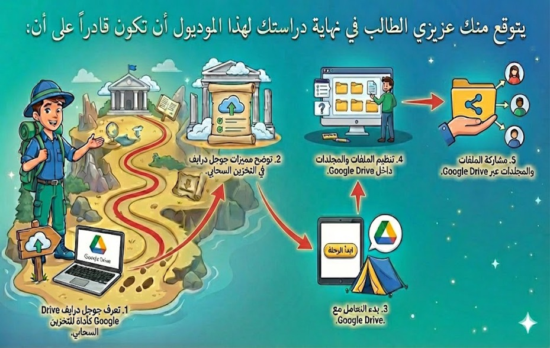
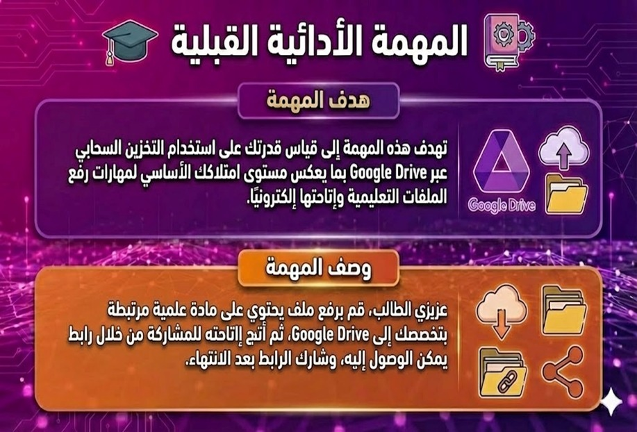
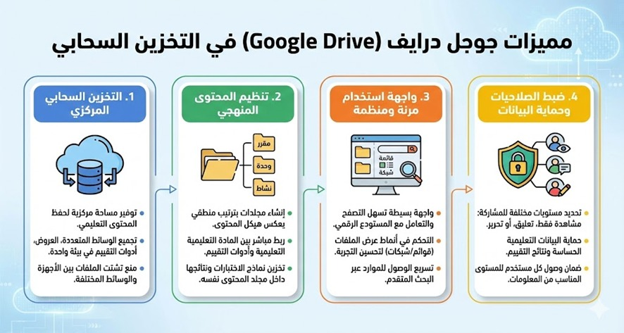
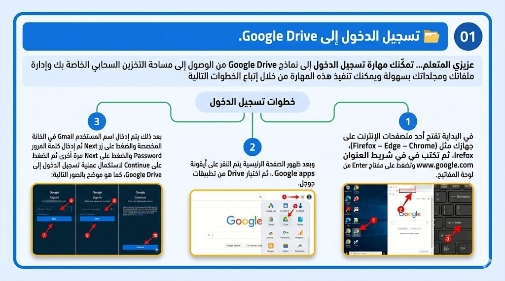
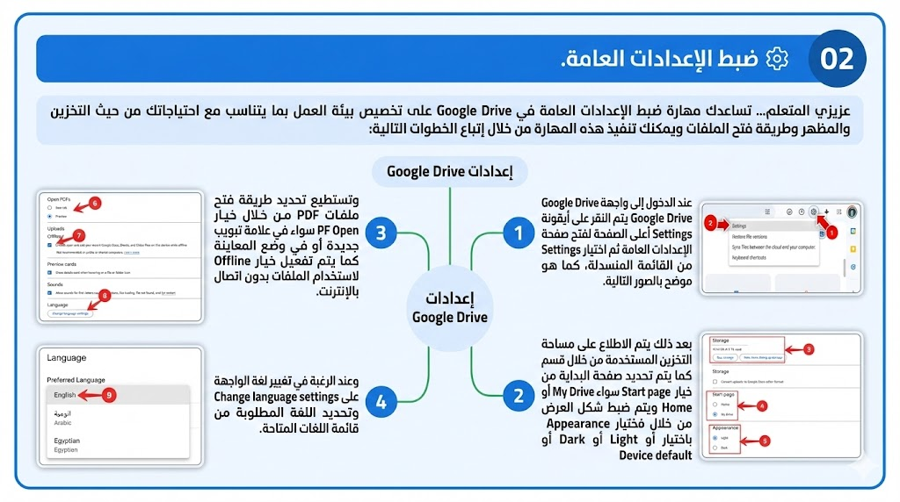
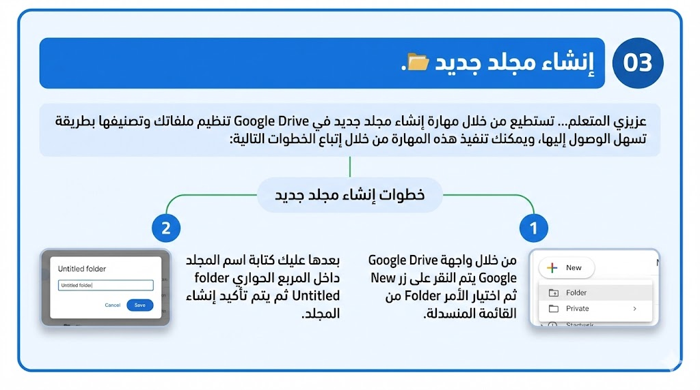
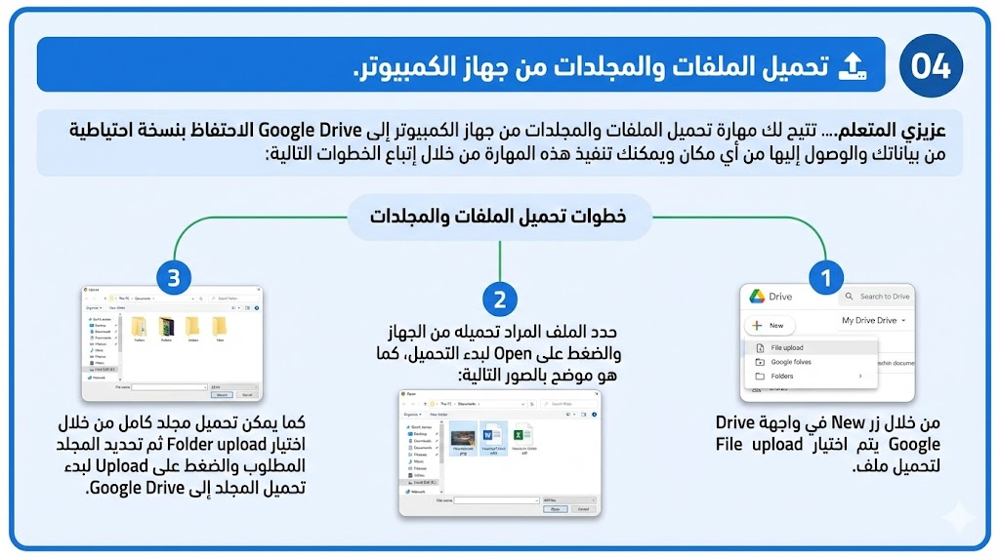
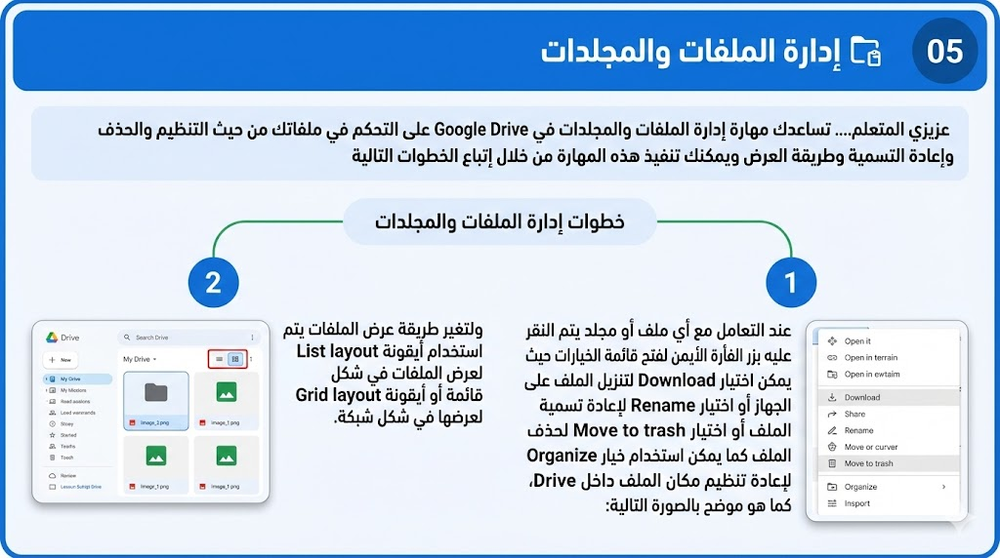
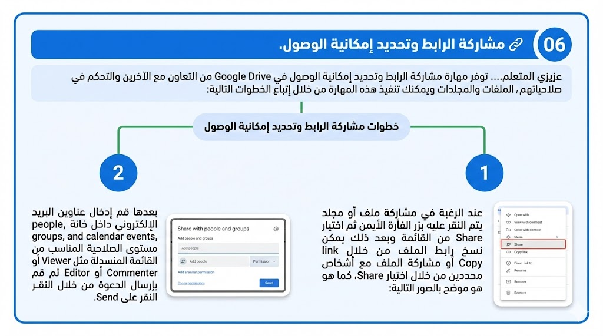
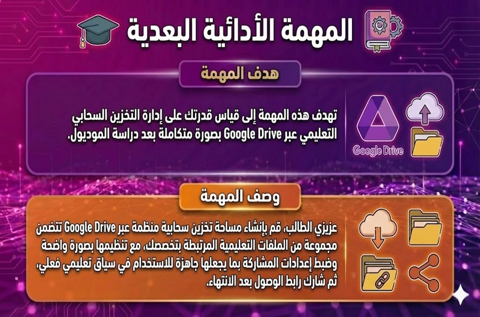

عزيزي الطالب.. أدى التحول الرقمي في التعليم إلى تزايد كميات المحتوى التعليمي الرقمي وتنوع أشكاله، الأمر الذي جعل تنظيمه وإدارته تحديًا أساسيًا داخل البيئات التعليمية المعاصرة، فلم يعد التخزين التقليدي أو العشوائي للملفات كافيًا لضمان سهولة الوصول إليه وإعادة توظيفه واستخدامه، خاصة في ظل التوسع في استخدام المنصات وأدوات التعلم الإلكتروني.
ومن هنا تبرز الحاجة إلى مستودعات تعلم رقمية تضمن حفظ الموارد التعليمية داخل بيئة آمنة، وتيسر تصنيفها وترتيبها واسترجاعها وتدعم مشاركتها، ويأتي Google Drive في هذا السياق بوصفه أداة للتخزين السحابي تتيح إمكانات متعددة لحفظ المحتوى التعليمي وتنظيمه في مجلدات وإدارته والتحكم في صلاحيات الوصول له في أي وقت ومن أي مكان، مما يجعله مناسبًا لتوظيفه في إدارة مستودعات التعلم الرقمية في البيئات التعليمية الحديثة.
يتوقع منك عزيزي الطالب في نهاية دراستك لهذا الموديول أن تكون قادراً على إدارة مستودعات التعلم الرقمية بكفاءة.

عزيزي المتعلم... قبل البدء في دراسة هذا الموديول، يُطلب منك تنفيذ المهمة المطلوبة اعتمادًا على خبراتك السابقة ومعارفك الحالية دون الرجوع إلى محتوى الموديول، وذلك بهدف التعرف على مستوى أدائك الحالي قبل الدراسة، يرجى مراعاة التعليمات الآتية:

تطبيق عملي على Google Drive ↗هذا الاختبار وضع لقياس مدى تحصيلك في الجوانب المعرفية والمهارية المرتبطة بإدارة مستودعات التعلم الرقمية تطبيقًا على Google Drive.
من فضلك عزيزي الطالب اقرأ التعليمات التالية بعناية والاسترشاد بها قبل أن تبدأ في إجابة الاختبار:
عزيزي الطالب...يشمل محتوى الموديول على المعارف والمهارات الخاصة بإدارة مستودعات التعلم الرقمية تطبيقًا على Google Drive، ويمكن عرض تلك العناصر كالتالي:
أدى التحول الرقمي في التعليم إلى إعادة تشكيل طبيعة المحتوى التعليمي وطرق إنتاجه وتداوله، حيث لم يعد المحتوى محصورًا في الكتب المطبوعة أو الوسائل التقليدية، بل أصبح متنوعًا في أشكاله الرقمية، مثل النصوص الإلكترونية والعروض التقديمية الوسائط المتعددة، وترتب على هذا التنوع زيادة حجم المحتوى التعليمي الرقمي بصورة ملحوظة؛ الأمر الذي أوجد تحديات جديدة تتعلق بكيفية تنظيمه وإدارته وضمان سهولة الوصول إليه للإفادة منه.
وهو ما جعل خدمات التخزين السحابي أحد الحلول الرئيسة لتلبية هذه المتطلبات في ظل البيئات التعليمية الحديثة، التي تضمنت نوعية في أساليب حفظ البيانات والمعلومات وإدارتها والتحكم فيها.
ويعد Google Drive إحدى خدمات التخزين السحابي التي تعد أداة متكاملة لإدارة الملفات والمجلدات، حيث يرتبط بحساب المستخدم، ويتيح مساحة رقمية يمكن من خلالها حفظ المحتوى التعليمي وتنظيمه واسترجاعه ومشاركته. ويتيح Google Drive إنشاء مجلدات متعددة، يمكن استخدامها لبناء هيكل منظم يعكس طبيعة المحتوى وأهدافه التعليمية، مثل تقسيم المحتوى إلى مقررات ثم وحدات ثم موضوعات فرعية، ويسهم هذا التنظيم في تسهيل الوصول إلى الموارد التعليمية، وتقليل التشتت عند التعامل مع كميات كبيرة من المحتوى.
تتمتع منصة Google Drive بمجموعة من المزايا التي أسهمت في فاعلية استخدامها في مجال التخزين السحابي التعليمي وجعلتها أداة مناسبة لإدارة مستودعات التعلم الرقمية، ويمكن عرض أبرز هذه المزايا فيما يلي:







عزيزي المتعلم.. تفاعل مع النظام الذكي من خلال اختيار الكلمات المفتاحية أو الأسئلة الشائعة المرتبطة باستخدام Google Drive في تنظيم وإدارة مستودعك الرقمي، ثم في ضوء تلك الاستجابات المعروضة قم بتنفيذ المهمة الآتية:
أنشئ مجلدات تعكس طبيعة تخصصك، ثم حدد صلاحيات المشاركة المناسبة لمعلمك.
عزيزي المتعلم...بعد الانتهاء من دراسة هذا الموديول، يُطلب منك تنفيذ المهمة الآتية في ضوء ما اكتسبته من معارف ومهارات، وذلك بهدف قياس مستوى تطور أدائك بعد الدراسة، يرجى مراعاة التعليمات الآتية:

تطبيق عملي على Google Drive ↗هذا الاختبار وضع لقياس مدى تحصيلك في الجوانب المعرفية والمهارية المرتبطة بإدارة مستودعات التعلم الرقمية تطبيقًا على Google Drive.
من فضلك عزيزي الطالب اقرأ التعليمات التالية بعناية والاسترشاد بها قبل أن تبدأ في إجابة الاختبار البعدي لقياس مستوى تقدمك: